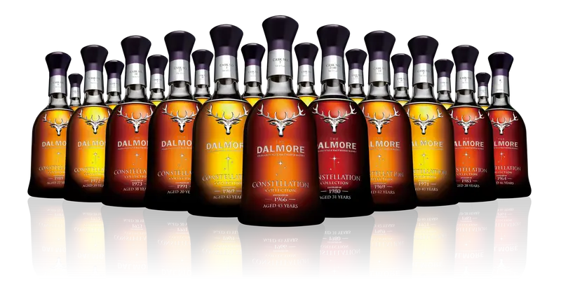

大摩星宿旗艦
單桶原酒蘇格蘭威士忌系列
為大摩極具代表性的夢幻逸品，一套21瓶皆是由大摩天才首席釀酒師Richard Paterson親自嚴選1964到1992年，21桶典藏年代，並透過不同珍貴橡木桶的運用，變化熟成出最完美風味的大摩珍稀老酒。在每一滴珍釀裡，都可以見到閃耀如琥珀的光澤，撲鼻而來層次豐富的香氣，以及綿延不絕的餘韻，演繹著大摩蘇格蘭威士忌的靈魂魅力。21瓶一套組的限量珍藏原酒，皆裝瓶於手工吹製的水晶瓶中，萬中選一的堅持，創造鑽石般耀眼的21顆星宿，成就大摩星宿系列的璀璨不朽傳奇。
- Volume: 70cl ABV: 40%
- 建議售價：NTD. 210,000元